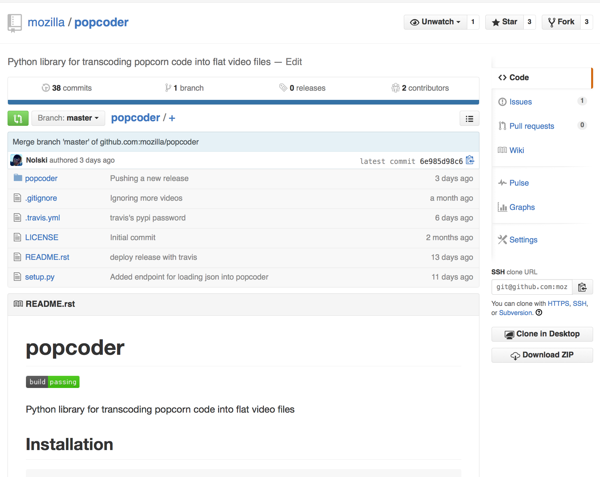
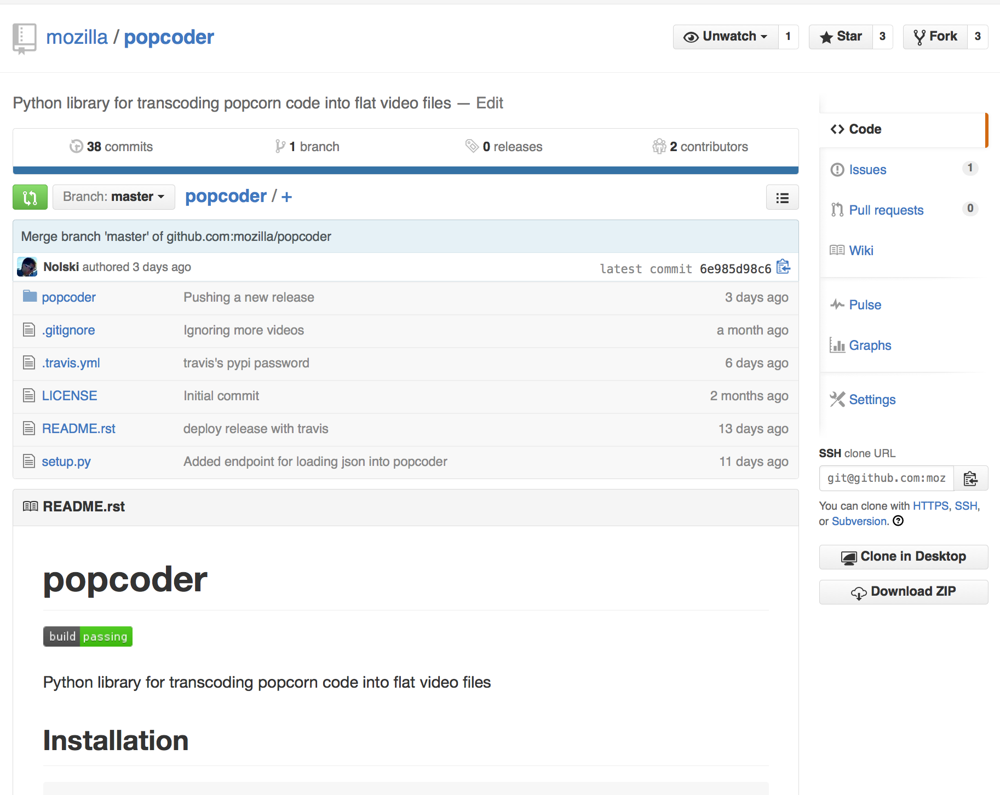
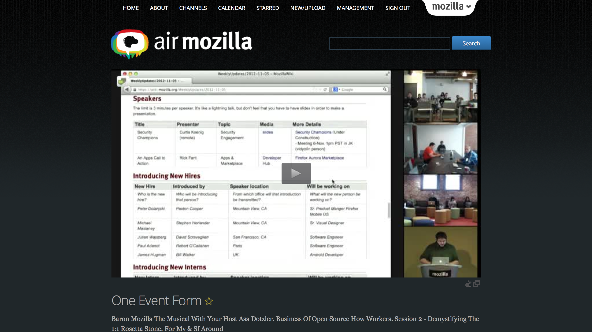
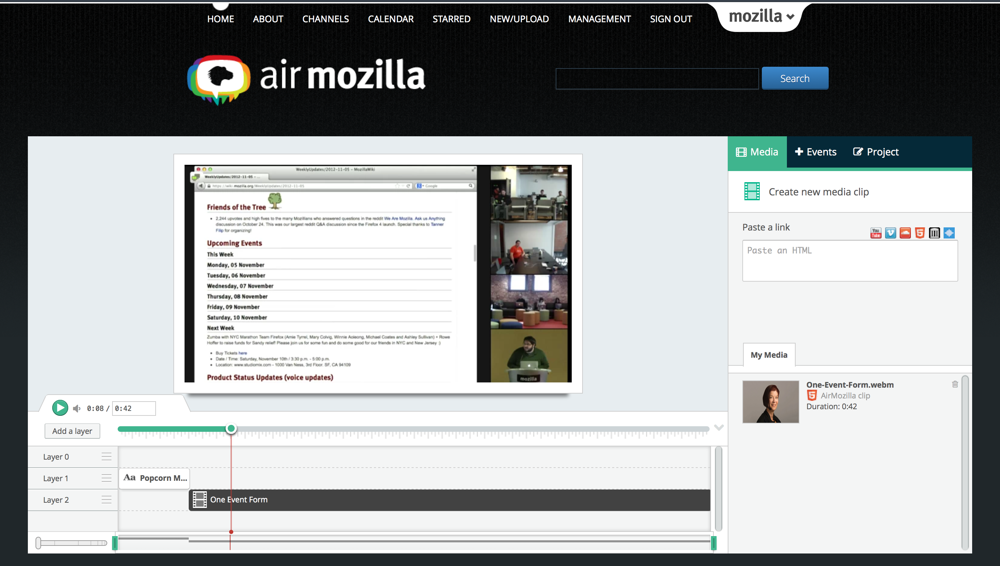

Going the Extra 10%
Building The Next Generation Video Editor on the Web
Created by Mike Nolan / @TheRogueNolski
“We all stand upon the shoulders of giants.”
 

"clipData": {
"https://d3fenhwk93s16g.cloudfront.net/p0f8n3/kpoff.webm": {
"type": "AirMozilla",
"title": "Hello from Ritu K",
"source": "https://d3fenhwk93s16g.cloudfront.net/p0f8n3/hd_webm.webm",
"thumbnail": "https://air.cdn.mozilla.net/media/cache/70/2b/702ba30e10cf9af1a464e818e5844e6c.png",
"duration": 55.466
}
},
"tracks": [{
"id": "3",
"trackEvents": [{
"type": "loopPlugin",
"popcornOptions": {
"start": 25.65380201814801,
"end": 27.029337990223596,
...
},
}]
}, {
"id": "2",
"trackEvents": [{
"type": "skip",
"kpoffOptions": { ... },
"track": "2",
}]
}, {
"id": "0",
"trackEvents": [{
"id": "TrackEvent0",
"type": "sequencer",
"popcornOptions": {
"start": 0,
"source": ["https://d3fenhwk93s16g.cloudfront.net/p0f8n3/hd_webm.webm?butteruid=1438208163961"],
...
},
}]
}]


Questions?